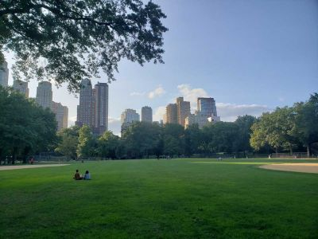
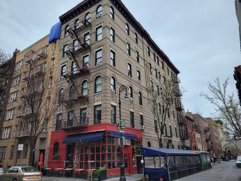
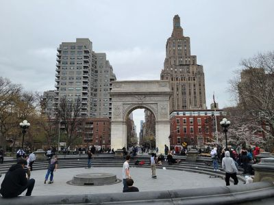
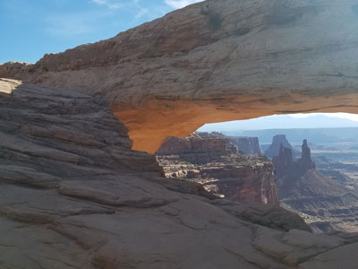
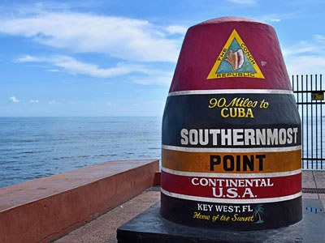
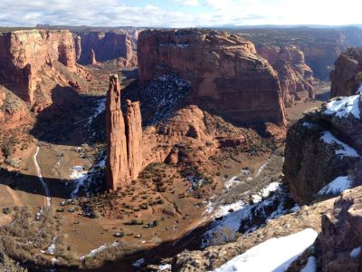
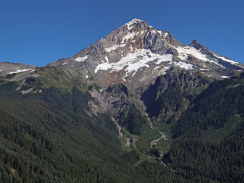

America’s most frequently shared destinations on social media captivate visitors with iconic landmarks, stunning natural scenery, vibrant cityscapes, unforgettable experiences, and highly photogenic settings that inspire millions of travelers to explore and share their journeys.

McWay Falls
80-foot waterfall that dramatically drops from granite cliffs onto a secluded sandy cove with turquoise ocean waters below.

Keyhole Rock
Natural sea stack with a large keyhole-shaped arch carved by wave erosion.

Richardmouser, CC BY-SA 4.0, via Wikimedia Commons; Image Size Adjusted

Haystack Rock
Sea stack and monolithic rock adjacent to Cannon Beach accessible by foot at low tide.

King of Hearts, CC BY-SA 4.0, via Wikimedia Commons; Image Size Adjusted

Antelope Canyon
Scenic slot canyon sections with characteristic "flowing" shapes.

Washington Street west of Manhattan Bridge
Historic cobblestone corridor lined with converted brick warehouses offering striking architectural views framed beneath a towering steel suspension structure.

Thomas Wolf, www.foto-tw.de, CC BY-SA 3.0, via Wikimedia Commons; Image Size Adjusted
.jpg){kind=link}
Horseshoe Bend
Horseshoe-shaped incised meander of the Colorado River with an overlook at 4,200 feet.

Tunnel View - Yosemite Valley
One of the most famous views of Yosemite Valley with Half Dome in the background.

"Urban Light"
Large-scale outdoor installation composed of rows of restored vintage street lamps arranged in a grid-like formation that emits a warm, symmetrical glow.

Diliff, CC BY-SA 3.0, via Wikimedia Commons; Image Size Adjusted

Half Dome (View from Glacier Point)
Well-known rock formation named for its distinct shape making it appear like a dome cut in half.

Diliff, CC BY-SA 3.0, via Wikimedia Commons; Image Size Adjusted

Bixby Creek Bridge
One of the most photographed bridges in California due to its aesthetic design, "graceful architecture and magnificent setting".
Lake Tahoe
Largest alpine lake in North America, Lake Tahoe is a home to winter sports, summer outdoor recreation, and scenery enjoyed throughout the year.

Lombard Street
East-west street in San Francisco that is famous for a steep, one-block section with eight hairpin turns.

Bryce Canyon
Collection of giant natural amphitheaters containing spectacular views of geological structures with red, orange, and white colors called hoodoos.

Painted Ladies
Best-known group of Victorian and Edwardian houses and buildings repainted, in three or more colors that embellish or enhance their architectural details across from Alamo Square park.

Photo by Stephen Leonardi on Unsplash; Image Size Adjusted
Havasu Falls
Largest individual side-canyon to the Grand Canyon famous for its aquamarine color of the streams and ponds.

Photo by Stephen Leonardi on Unsplash; Image Size Adjusted
Devils Tower
Butte composed of igneous rock in the Black Hills, in northeastern Wyoming, rising 1,267 feet above the Belle Fourche River, standing 867 feet from summit to base.

Paul Hermans, CC BY-SA 3.0, via Wikimedia Commons; Image Size Adjusted

Devils Golf Course
Immense area of rock salt eroded by wind and rain into jagged spires. So incredibly serrated that "only the devil could play golf on such rough links".
-400.jpg)
Sandy Horvath-Dori from Grand Junction, CO, USA, CC BY 2.0, via Wikimedia Commons; Image Size Adjusted
.jpg){kind=link}
Forest Gump Hill
Long, straight desert highway framed by towering red rock formations and expansive skies, offering a cinematic view that has become iconic in American pop culture.

Monument Valley
Vast desert landscape defined by towering sandstone buttes, mesas, and expansive open plains shaped by erosion over millions of years into iconic natural formations.

Multnomah Falls
Falls spanning two tiers on basalt cliffs, is the tallest waterfall in Oregon at 620 ft.

Photo by Leonel Heisenberg on Unsplash; Image Size Adjusted
Rainbow Row
Series of pastel-colored historic Georgian-style row houses featuring symmetrical facades and decorative details that create a vivid streetscape.

Tomas Castelazo, CC BY-SA 3.0, via Wikimedia Commons; Image Size Adjusted

Cathedral Rock
Natural sandstone butte on the Sedona skyline and one of the most-photographed sights in Arizona.

Wearethenext, CC BY-SA 3.0, via Wikimedia Commons; Image Size Adjusted

Bradbury Building
Architectural landmark best known for its extraordinary skylit atrium of access walkways, stairs and elevators, and their ornate ironwork.

RyanFSpack, CC0, via Wikimedia Commons; Image Size Adjusted

Maroon Bells
Twin jagged mountain peaks rising above an alpine lake, reflecting dramatic slopes, dense forests, and seasonal wildflowers.

Jon Sullivan, PD Photo., Public domain, via Wikimedia Commons; Image Size Adjusted

Mormon Row
District consisting of a line of homestead complexes along the Jackson-Moran Road near the southeast corner of Grand Teton National Park.

Clément Bardot, CC BY-SA 3.0, via Wikimedia Commons; Image Size Adjusted

Grand Prismatic Spring
Largest hot spring in the United States, and the third largest in the world, with bright, vivid colors in the spring resulting from microbial mats around the edges of the mineral-rich water.

PortableNYCTours, CC BY-SA 4.0, via Wikimedia Commons; Image Size Adjusted
.jpg){kind=link}
Flatiron Building
Triangular 22-story, 285-foot-tall (86.9 m) steel-framed landmarked building located in the eponymous Flatiron District neighborhood of Manhattan.

Ian Howard, CC BY-SA 3.0, via Wikimedia Commons; Image Size Adjusted

Acorn Street
Narrow cobblestone lane lined with historic brick row houses illuminated by gas lamps that evoke a preserved 19th-century streetscape.

Liveit or livewithit, CC BY-SA 3.0, via Wikimedia Commons; Image Size Adjusted

Red Rock Park and Amphitheatre
Amphitheater and park known for its very large red sandstone outcrops.

Fabio Achilli from Milano, Italy, CC BY 2.0, via Wikimedia Commons; Image Size Adjusted
.jpg){kind=link}
Bonneville Salt Flats
30,000 acre expanse of hard, white salt crust on the western edge of the Great Salt Lake basin in Utah.

"What Lifts You" Mural
Vibrant outdoor mural depicting a pair of large angel wings painted on a wall, designed as an interactive backdrop for photos.

Jeffhollett, CC BY-SA 4.0, via Wikimedia Commons; Image Size Adjusted

Thors Well
Natural coastal rock formation featuring a circular sinkhole where ocean waves surge upward and drain dramatically through a rugged basalt shoreline

Delicate Arch
Freestanding natural arch is the most widely recognized landmark in Arches National Park.

Fannette Island
Small rocky island featuring a historic stone tea house ruin surrounded by clear alpine waters and mountain scenery.

Paul Kordwig Post.eingang, CC BY-SA 3.0, via Wikimedia Commons; Image Size Adjusted

The Wave
Sandstone rock formation located in Arizona, near border with Utah is well-known among hikers and photographers for its colorful, undulating forms.

Photo by Elizabeth Villalta on Unsplash; Image Size Adjusted
Seven Magic Mountains
Vibrant public art installation of seven towering stacks of brightly painted boulders set against the Mojave Desert landscape.

Minipaula, CC BY-SA 3.0, via Wikimedia Commons; Image Size Adjusted

Wormsloe Historic Site
State historic site protecting part of what was once the Wormsloe Plantation, a large estate established by one of Georgia's colonial founders.
-400.jpg)
Jeff P from Berkeley, CA, USA, CC BY 2.0, via Wikimedia Commons; Image Size Adjusted
.jpg){kind=link}
Swiftcurrent Lake
Glacially formed alpine lake bordered by forested slopes and rugged peaks creating reflective water views and access to surrounding trails.

M.mastrangelo, CC BY-SA 4.0, via Wikimedia Commons; Image Size Adjusted

John Ford Point
Elevated desert viewpoint overlooking vast red sandstone buttes and mesas rising from a wide valley floor often framed by expansive skies.

Photo by Dirk Spijkers on Unsplash; Image Size Adjusted
Oak Alley Plantation
Property designated a National Historic Landmark for its architecture and landscaping, and for the agricultural innovation of grafting pecan trees.

Brynn, CC BY-SA 3.0, via Wikimedia Commons; Image Size Adjusted

Split Rock Lighthouse
State park best known for the picturesque Split Rock Lighthouse, one of the most photographed lighthouses in the United States.

Tim Wilson from Blaine, MN, USA, CC BY 2.0, via Wikimedia Commons; Image Size Adjusted
.jpg){kind=link}
Apostle Islands National Lakeshore
National lakeshore protecting 21 islands and a 12-mile stretch of mainland along the south shore of Lake Superior.

Jeff P from Berkeley, CA, USA, CC BY 2.0, via Wikimedia Commons; Image Size Adjusted
St. Patrick's Cathedral
Gothic Revival-style Roman Catholic cathedral church located on Fifth Avenue in Manhattan, and the seat of the Archbishop of New York.

Jeff P from Berkeley, CA, USA, CC BY 2.0, via Wikimedia Commons; Image Size Adjusted
Vessel
Interactive honeycomb-like structure of staircases and platforms located in the Hudson Yards development on Manhattan's West Side.

Jeff P from Berkeley, CA, USA, CC BY 2.0, via Wikimedia Commons; Image Size Adjusted
Little Island at Pier 55
Public park and performance venue built on a pier in the Hudson River, featuring landscaped gardens, walking paths, and an amphitheater for events.

Jeff P from Berkeley, CA, USA, CC BY 2.0, via Wikimedia Commons; Image Size Adjusted
Grand Central Terminal
Historic train station and landmark in Midtown Manhattan, known for its stunning architecture and iconic clock.

Jeff P from Berkeley, CA, USA, CC BY 2.0, via Wikimedia Commons; Image Size Adjusted
World Trade Center Station (Oculus)
Architectural landmark and transportation hub in Lower Manhattan, featuring a distinctive white steel structure resembling a bird in flight.

Jeff P from Berkeley, CA, USA, CC BY 2.0, via Wikimedia Commons; Image Size Adjusted
Brooklyn Bridge Park
Waterfront park along the East River in Brooklyn, offering scenic views of the Manhattan skyline and the Brooklyn Bridge, with recreational spaces and cultural events.

Jeff P from Berkeley, CA, USA, CC BY 2.0, via Wikimedia Commons; Image Size Adjusted
Unisphere
Iconic stainless steel globe sculpture located in Flushing Meadows Corona Park, originally built for the 1964 New York World's Fair.

Jeff P from Berkeley, CA, USA, CC BY 2.0, via Wikimedia Commons; Image Size Adjusted
The Battery
Historic waterfront park located at the southern tip of Manhattan, offering views of the Statue of Liberty and Ellis Island, with gardens, monuments, and recreational spaces.

Jeff P from Berkeley, CA, USA, CC BY 2.0, via Wikimedia Commons; Image Size Adjusted
The New York Stock Exchange (Wall Street)
Iconic financial institution located on Wall Street in Lower Manhattan, known for its neoclassical architecture and as a symbol of global finance.

Jeff P from Berkeley, CA, USA, CC BY 2.0, via Wikimedia Commons; Image Size Adjusted
Sheep Meadow
Expansive open meadow located in the southern part of Central Park, popular for picnics, sunbathing, and recreational activities.

Jeff P from Berkeley, CA, USA, CC BY 2.0, via Wikimedia Commons; Image Size Adjusted
Solomon R. Guggenheim Museum
Renowned art museum located on the Upper East Side of Manhattan, designed by architect Frank Lloyd Wright, known for its unique spiral structure and modern art collection.

Jeff P from Berkeley, CA, USA, CC BY 2.0, via Wikimedia Commons; Image Size Adjusted
New York Public Library Main Branch
Historic public library building in Manhattan, known for its stunning architecture and extensive collection.

Jeff P from Berkeley, CA, USA, CC BY 2.0, via Wikimedia Commons; Image Size Adjusted
Friends Apartment
Exterior of the apartment building used as the residence of the main characters in the popular TV show "Friends," located in the Greenwich Village neighborhood of Manhattan.

Jeff P from Berkeley, CA, USA, CC BY 2.0, via Wikimedia Commons; Image Size Adjusted
The High Line
Elevated linear park built on a former railroad track on Manhattan's West Side, featuring landscaped gardens, public art, and views of the city and the Hudson River.

Jeff P from Berkeley, CA, USA, CC BY 2.0, via Wikimedia Commons; Image Size Adjusted
Washington Square Park
Iconic public park in the Greenwich Village neighborhood of Manhattan, known for its central fountain, archway, and vibrant cultural scene.

Jeff P from Berkeley, CA, USA, CC BY 2.0, via Wikimedia Commons; Image Size Adjusted
Charging Bull
Iconic bronze sculpture located in the Financial District of Manhattan, symbolizing financial optimism and prosperity.

Jeff P from Berkeley, CA, USA, CC BY 2.0, via Wikimedia Commons; Image Size Adjusted
Federal Hall
Historic building located on Wall Street in Lower Manhattan, known for its neoclassical architecture and as the site of George Washington's inauguration as the first President of the United States.

Jeff P from Berkeley, CA, USA, CC BY 2.0, via Wikimedia Commons; Image Size Adjusted
Smithsonian National Museum of Natural History
Renowned natural history museum located on the National Mall in Washington, D.C., featuring extensive exhibits on biodiversity, geology, and human history.

Jeff P from Berkeley, CA, USA, CC BY 2.0, via Wikimedia Commons; Image Size Adjusted
Library of Congress Thomas Jefferson Building
Iconic library building in Washington, D.C., known for its stunning architecture and extensive collection of books, manuscripts, and historical artifacts.

Jeff P from Berkeley, CA, USA, CC BY 2.0, via Wikimedia Commons; Image Size Adjusted
Elfreth's Alley
Historic cobblestone street in Philadelphia, known for its well-preserved 18th-century row houses and as the oldest continuously inhabited residential street in the United States.

Jeff P from Berkeley, CA, USA, CC BY 2.0, via Wikimedia Commons; Image Size Adjusted
Fallingwater
Iconic house designed by architect Frank Lloyd Wright, built over a waterfall in rural Pennsylvania, known for its integration with the natural landscape and innovative design.

Jeff P from Berkeley, CA, USA, CC BY 2.0, via Wikimedia Commons; Image Size Adjusted
Diamond Head
Volcanic crater offering a historic hiking trail through tunnels and bunkers with panoramic views of Honolulu and the Pacific Ocean.

Jeff P from Berkeley, CA, USA, CC BY 2.0, via Wikimedia Commons; Image Size Adjusted
Biltmore Estate
Historic house museum and Châteauesque-style mansion is the largest privately owned house in the United States and remains one of the most prominent examples of Gilded Age mansions.

Jeff P from Berkeley, CA, USA, CC BY 2.0, via Wikimedia Commons; Image Size Adjusted
Hanauma Bay
Marine life conservation area within a volcanic cone offering world-class snorkeling, educational exhibits, and pristine beach access.

Jeff P from Berkeley, CA, USA, CC BY 2.0, via Wikimedia Commons; Image Size Adjusted
Mesa Arch
Spectacular arch perched on a cliff edge. Visitors can get views of the White Rim Road, canyons, and the distant La Sal Mountains.

Jeff P from Berkeley, CA, USA, CC BY 2.0, via Wikimedia Commons; Image Size Adjusted
Southernmost Point of the Continental USA
Simple monument located at the southernmost tip of the continental U.S. & 90 miles north of Cuba

Jeff P from Berkeley, CA, USA, CC BY 2.0, via Wikimedia Commons; Image Size Adjusted
Broadway Entertainment District / Honly Tonk Highway
Major thoroughfare in the downtown area renowned for honky tonks and live country music and home to retail shops, restaurants, dessert spots, tourist attractions, and a few hotels.

Jeff P from Berkeley, CA, USA, CC BY 2.0, via Wikimedia Commons; Image Size Adjusted
Original Starbucks
The first Starbucks Coffee store, founded in 1971
Jeff P from Berkeley, CA, USA, CC BY 2.0, via Wikimedia Commons; Image Size Adjusted
Original Starbucks
The first Starbucks Coffee store, founded in 1971
Jeff P from Berkeley, CA, USA, CC BY 2.0, via Wikimedia Commons; Image Size Adjusted
Original Starbucks
The first Starbucks Coffee store, founded in 1971

Jeff P from Berkeley, CA, USA, CC BY 2.0, via Wikimedia Commons; Image Size Adjusted
Crater Lake
National park encompassing the caldera of Crater Lake, the deepest lake in the United States, the second-deepest in North America, and the surrounding hills and forests.

Jeff P from Berkeley, CA, USA, CC BY 2.0, via Wikimedia Commons; Image Size Adjusted
Spider Rock
Dramatic sandstone spire viewpoint featuring panoramic canyon vistas, cultural significance, and a short accessible walk to a breathtaking overlook of towering rock formations.

Jeff P from Berkeley, CA, USA, CC BY 2.0, via Wikimedia Commons; Image Size Adjusted
Mount Hood
Oregon's highest mountain, offers the only year-round lift-served skiing in North America.
Jeff P from Berkeley, CA, USA, CC BY 2.0, via Wikimedia Commons; Image Size Adjusted
Jeff P from Berkeley, CA, USA, CC BY 2.0, via Wikimedia Commons; Image Size Adjusted
Shiprock
Towering volcanic monolith rising dramatically from the desert floor with radiating rock formations extending across the surrounding landscape.